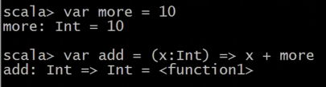

闭包:


在函数定义的时候绑定了一个函数体外面的变量(有点像面向过程的全局变量, 或者面向对象里的属性), 在调用的时候才知道该变量的值。
object BibaoTest {
def main(args: Array[String]): Unit = {
// 如何在函数f1外部访问到result这个值？
val f1 = () => {
var result = 10
//用result直接作为函数返回值是一种做法, 但这种做法别的语言也能实现
// result
// 在f1函数体内再定义一个函数f2,访问和操作了result这个变量，f2引
//用了result，如果f2没有死掉，那么result就一直存在
val f2 = (x:Int) => {
result += x //在f2内部修改result的值
result //result不一定要作为f2的返回值, 这里这样做只是为了方便观察result的值的变化
}
f2 //用f2函数来作为f1的返回值
}
// resultFunction就是 f1体中的f2。我们通过在函数f1体内再定义了一个函
//数f2, 达到了在函数f1外部, 操作f1函数里面的一个局部变量的目的。
val resultFunction = f1()
/** resultFunction就能直接访问和修改 f1 这个函数中的一个局部变量了。
下面就是对result的修改。因为result和f2都是f1的成员, 所以只要f1函数还没释放,
result和f2就一直存在不会释放。所以result的值的每次变化都会被保存。这样也有一个
坏处, 就是只要f1被调用了一次, 只要用户不主动释放, 程序运行时result就会永远存在,
消耗内存空间。这就是闭包的弊端, 所以闭包要谨慎使用。
*/
val lastResult1 = resultFunction(4) //4就是f2函数的参数x
println(lastResult1) //14
val lastResult2 = resultFunction(4)
println(lastResult2) //18
val lastResult3 = resultFunction(4)
println(lastResult3) //22
}
}
闭包就是根据高阶函数来实现的。也就是在函数体f1的内部，编写一个新的函数f2， f2 用来操作 result这个变量, f2这个函数，必须作为f1这个函数的返回值。闭包也是有函数式编程的语言的特性。 闭包通常来讲可以简单的认为是可以访问一个函数里面局部变量的另外一个函数。
隐式转换:
在scala中有一个奇怪的现象:
1 to 10 == 1.to(10)
Int类型中，压根就没有to方法，但是 1.to(10) 这句代码居然能成功！！！
那必然存在着一种很有意思的语法。来帮我们解决了这个异常
实际上:
当调用了：1 to 10
其实是调用了：1.to(10)
但是：Int 中没有 to 方法
所以：去寻找引入的隐式转换中有没有能把 Int 类型转换成能执行 to 方法的类型
果然：在系统引入的转换中发现：implicit def intWrapper(x: Int): runtime.RichInt
(intWrapper是Int的包装类)
所以：最终 Int 类型的 1 就被转换成了 RichInt 类型的变量 1
验证：RichInt 中也确实存在 to 方法
最后：顺理成章的调用 RichInt(1).to(10)生成返回结果
结论：神奇但又合理
RichInt里面的until和to方法如下:

scala中系统自带的隐式转换共69个, 如下(可以发现隐式转换大部分都是一种方法, 还要少量是隐式转换类?):
scala> :implicits -v
/* 69 implicit members imported from scala.Predef */
/* 7 inherited from scala */
final implicit class ArrayCharSequence extends CharSequence
final implicit class ArrowAssoc[A] extends AnyVal
final implicit class Ensuring[A] extends AnyVal
final implicit class RichException extends AnyVal
final implicit class SeqCharSequence extends CharSequence
final implicit class StringFormat[A] extends AnyVal
final implicit class any2stringadd[A] extends AnyVal
/* 40 inherited from scala.Predef */
implicit def ArrowAssoc[A](self: A): ArrowAssoc[A]
implicit def Ensuring[A](self: A): Ensuring[A]
implicit def StringFormat[A](self: A): StringFormat[A]
implicit def any2stringadd[A](self: A): any2stringadd[A]
implicit def booleanArrayOps(xs: Array[Boolean]): mutable.ArrayOps[Boolean]
implicit def byteArrayOps(xs: Array[Byte]): mutable.ArrayOps[Byte]
implicit def charArrayOps(xs: Array[Char]): mutable.ArrayOps[Char]
implicit def doubleArrayOps(xs: Array[Double]): mutable.ArrayOps[Double]
implicit def floatArrayOps(xs: Array[Float]): mutable.ArrayOps[Float]
implicit def genericArrayOps[T](xs: Array[T]): mutable.ArrayOps[T]
implicit def intArrayOps(xs: Array[Int]): mutable.ArrayOps[Int]
implicit def longArrayOps(xs: Array[Long]): mutable.ArrayOps[Long]
implicit def refArrayOps[T <: AnyRef](xs: Array[T]): mutable.ArrayOps[T]
implicit def shortArrayOps(xs: Array[Short]): mutable.ArrayOps[Short]
implicit def unitArrayOps(xs: Array[Unit]): mutable.ArrayOps[Unit]
implicit def $conforms[A]: <:<[A,A]
implicit def ArrayCharSequence(__arrayOfChars: Array[Char]): ArrayCharSequence
implicit def Boolean2boolean(x: Boolean): Boolean
implicit def Byte2byte(x: Byte): Byte
implicit def Character2char(x: Character): Char
implicit def Double2double(x: Double): Double
implicit def Float2float(x: Float): Float
implicit def Integer2int(x: Integer): Int
implicit def Long2long(x: Long): Long
implicit def RichException(self: Throwable): RichException
implicit def SeqCharSequence(__sequenceOfChars: IndexedSeq[Char]): SeqCharSequence
implicit def Short2short(x: Short): Short
implicit val StringCanBuildFrom: generic.CanBuildFrom[String,Char,String]
implicit def augmentString(x: String): immutable.StringOps
implicit def boolean2Boolean(x: Boolean): Boolean
implicit def byte2Byte(x: Byte): Byte
implicit def char2Character(x: Char): Character
implicit def double2Double(x: Double): Double
implicit def float2Float(x: Float): Float
implicit def int2Integer(x: Int): Integer
implicit def long2Long(x: Long): Long
implicit def short2Short(x: Short): Short
implicit def tuple2ToZippedOps[T1, T2](x: (T1, T2)): runtime.Tuple2Zipped.Ops[T1,T2]
implicit def tuple3ToZippedOps[T1, T2, T3](x: (T1, T2, T3)): runtime.Tuple3Zipped.Ops[T1,T2,T3]
implicit def unaugmentString(x: immutable.StringOps): String
/* 22 inherited from scala.LowPriorityImplicits */
implicit def genericWrapArray[T](xs: Array[T]): mutable.WrappedArray[T]
implicit def wrapBooleanArray(xs: Array[Boolean]): mutable.WrappedArray[Boolean]
implicit def wrapByteArray(xs: Array[Byte]): mutable.WrappedArray[Byte]
implicit def wrapCharArray(xs: Array[Char]): mutable.WrappedArray[Char]
implicit def wrapDoubleArray(xs: Array[Double]): mutable.WrappedArray[Double]
implicit def wrapFloatArray(xs: Array[Float]): mutable.WrappedArray[Float]
implicit def wrapIntArray(xs: Array[Int]): mutable.WrappedArray[Int]
implicit def wrapLongArray(xs: Array[Long]): mutable.WrappedArray[Long]
implicit def wrapRefArray[T <: AnyRef](xs: Array[T]): mutable.WrappedArray[T]
implicit def wrapShortArray(xs: Array[Short]): mutable.WrappedArray[Short]
implicit def wrapUnitArray(xs: Array[Unit]): mutable.WrappedArray[Unit]
implicit def booleanWrapper(x: Boolean): runtime.RichBoolean
implicit def byteWrapper(x: Byte): runtime.RichByte
implicit def charWrapper(c: Char): runtime.RichChar
implicit def doubleWrapper(x: Double): runtime.RichDouble
implicit def fallbackStringCanBuildFrom[T]: generic.CanBuildFrom[String,T,immutable.IndexedSeq[T]]
implicit def floatWrapper(x: Float): runtime.RichFloat
implicit def intWrapper(x: Int): runtime.RichInt
implicit def longWrapper(x: Long): runtime.RichLong
implicit def shortWrapper(x: Short): runtime.RichShort
implicit def unwrapString(ws: immutable.WrappedString): String
implicit def wrapString(s: String): immutable.WrappedString
另一个隐式转换的例子: (即使参数个数和定义的隐式方法不一样, 也能成功)

隐式转换在什么时候发生?在系统即将产生异常的时候, 隐式转换的各类表达式会尝试触发隐式转换修复该异常, 让该异常消失。也可以说隐式转换发生在类型不匹配的时候。
到底有哪些情况可以触发隐式转换?
总的来说就是：当类型不匹配的情况下会尝试触发隐式转换。分为下面三种情况:
1、当调用某个对象不存在的方法的时候
"1.to(10)"或者"1 to 10"就是典型的调用了Int对象不存在的方法。1隐式转换为了 RichInt(1)
2、当参数类型不匹配的时候。比如上图的f1(2,3.0)
3、泛型中存在视图边界的时候
第一种情况举例如下: (下面这个例子展现了如何使用隐式转换来调用某个对象不存在的方法)
import java.io.File
import scala.io.Source
object ReadFileAllContentTest {
def main(args: Array[String]): Unit = {
// 首先构建一个文件类
val file: File = new File("D:\\testdata\\wc\\input\\wc.txt")
// 下面这句代码是为了让隐式转换生效, 在定义了隐式转换方法后再使用它。
//当然,如果file2RichFile方法定义在本类里, 则可以不用下面这句代码了
import RichFileImplicit.file2RichFile
/**
* 在没有隐式转换前, 这句代码在正常情况下是会报错的。原因是：
* 调用了file对象不存在的方法：readAllContent(一次性读取完整这个文件中的所有内容，成为一个字符串的结果)
*
* 请利用隐式转换 帮我解决这个问题:
* 首先 : 1.to(10)中, Int 没有 to 方法, 而RichInt 有 to 方法, 通过隐式转换来调用
* 同样的, File没有readAllContent方法,要实现隐式转换,使得这里不报错, 可以定义一个类RichFile5555来实现readAllContent方法。步骤如下:
第一步：定义一个类RichFile5555，具备readAllContent方法
第二步: 定义一个隐式转换, 让File类在方法不匹配的时候尝试隐式转换为RichFile5555
*/
val allContent:String = file.readAllContent()
println(allContent)
}
}
object RichFileImplicit{
// 定义一个隐式转换方法，让File类的对象，有机会转换成RichFile5555的对象
implicit def file2RichFile(file:File):RichFile5555 = new RichFile5555(file)
}
/**
* 这个类有一个readAllContent方法，具备了一个能力：一次性读取整个文件的所有内容
*/
class RichFile5555(var file:File){
def readAllContent():String = {
val result: String = Source.fromFile(file).mkString
result
}
}
第二种情况举例如下(可以发现定义隐式转换方法的形式和第一种情况一样,都是用隐式转换方法进行对象的转换, 只是用法不同):
class People(var id:Int, var name:String)
class Dog(var id:Int, var name:String)
object ImiplicitTest2 {
def main(args: Array[String]): Unit = {
val p1 = new People(1, "huangbo")
val p2 = new People(2, "xuzheng")
makeFriend(p1, p2) //这里必然是可以正常使用的
val tangbohu = new People(9527, "唐伯虎")
val wangcai = new Dog(1111, "旺财")
// 这个隐式转换的作用就是,当Dog类型的对象不匹配时, 当做People来处理
implicit def dog2People(dog:Dog):People = new People(dog.id, dog.name)
/**
* 有了隐式转换后, makeFriend里面的参数也能是Dog类型的了。
*/
makeFriend(tangbohu, wangcai)
}
// 交朋友的方法
def makeFriend(p1:People, p2:People): Unit ={
println(p1.name , "make friend with ", p2.name)
}
}
java代码当中的import代码段, 我们不需要import java.lang.* 却能使用到String等类, 就是因为java已经默认引用了这个包：
scala当中也一样, 默认 import scala.Predef._ 这里是下划线的另一个作用, scala中的"._"等价于java中的".*"。
泛型:
scala中的泛型定义和使用的常用形式如下(java中的类型参数是用"<>"包裹的, 而scala中的类型参数则是用"[]"包裹):
因为小括号里面是构造器,构造器的参数当然可以使用类型参数, 更何况scala构造器的参数同时还是属性


泛型类和泛型方法:

scala中的泛型指定上下界(类型界定)的形式和Java不同。在类型界定中, scala中的"<:"等价于java中的extends, ">:"等价于java中的super。而scala中还有"<%"和">%"符号, 表示视图界定。
上图中, 因为只有实现(在scala中也可能是继承)了Comparable接口, 才会有compareTo方法, 所以这里的类型界定是这样的。其中, String是Comparable的实现类, Int不是, Int是值类型, 是AnyVal的子类。泛型类和泛型方法的使用如下:


视图界定的 原理是通过隐式转换来实现的, 意思就是, 如果某类型不满足泛型的类型界定的约束范围, 但是该类型能通过隐式转换变成其他类型, 此时隐式转换后的类在该类型界定的范围内, 则依然是允许的, 依然被认为满足视图界定。比如: 利用<%符号对泛型T进行限定，它的意思是T可以是 Comparable 类继承层次结构中实现了Comparable 接口的类，也可以是能够经过隐式转换得到的实现了 Comparable 接口的类。

下图中的Int就不是Comparable的子类, 所以直接按照原先的MrRight1的定义执行的话, 会报错。

而如果将MrRight1的定义改为如下, 则能正常执行了。 因为 Int 类型此时会隐式转换为 RichInt 类，而RichInt 类属于 Comparable 继承层次结构。 Int 类会隐式转换成 RichInt 类， RichInt 并不是直接实现 Comparable 口，而是通ScalaNumberProxy 类将 Comparable 中的方法继承过来。

学了隐式转换和泛型再回过头来看一些方法的定义。比如下面这个flatMap的定义, 首先, String是根据array里的元素来的, GenTraversableOnce是集合类的最顶级父类Traversable的一个子类, B就是该集合要使用的返回值类型, 也就是说处理完array变成一个集合后, 要不要吧集合里的元素转换为其他类型, 还是保留数组原先的类型。而That就是后面一个隐式参数的泛型。

协变和逆变
协变的定义形式是 class A[+T]{} 或者 trait A[+T]{}, 其实也就是在泛型类的类型参数前面加了一个"+"
逆变的定义形式是 class A[-T]{} 或者 trait A[-T]{}, 其实也就是在泛型类的类型参数前面加了一个"-"
同时也要注意, 原先的普通泛型的定义形式, 即class A[T]{} 或者 trait A[T]{}, 这种没有"+"和"-"的, 叫做不变。
也就是说有一个泛型类如果定义成 trait CC[+T], 并且有两个类A和B, A是B的父类, 那么就会有CC[A]是CC[B]的父类,这就是协变。
同理, 如果有一个泛型类定义成 trait CC[-T], 并且有两个类A和B, A是B的父类, 那么就会有CC[B]是CC[A]的父类,这就是逆变。
协变和逆变其实就是一种规定, 方向相同就是协变, 方向不同就是逆变。
协变和逆变是出现在泛型类中的一组概念。就是为了明确参数化类型(如CC[Int]这样的就叫参数化类型)之间的父子关系。在java中, 参数化类型之间是没有任何关系的, 即使是实际类型参数之间有继承关系的参数化类型之间也没有任何关系。在Java中,参数化类型不具备可继承性。比如如果有一个泛型类CC[T], 则CC<String>一定不是CC<Object>的子类。scala中的不变就和java的参数化类型一样, 参数化类型之间没有任何关系。
下面进行测试, 测试方法是, 将子类对象赋给父类引用, 如果他们之间有继承关系, 则这样赋值不会报错, 否则报错。
首先是在java中:

在scala中(协变):

同上图的例子, 在scala中(逆变):

同上图的例子, 在scala中(不变):

协变逆变深入理解: (具体看附件pdf)